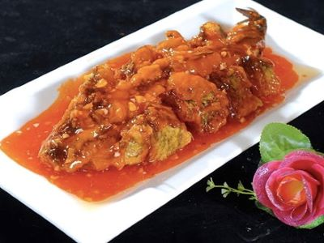
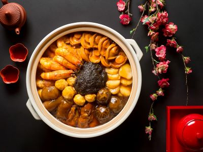
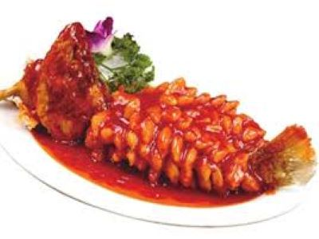
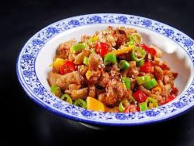

皆さんが最も好きな中華料理はなんですか？どこの料理を知っていますか？実際中華料理の調理法には数多くの流派があります。
そのうち最も影響力があり、代表的なものとして八大料理：魯菜（山東料理）、川菜（四川料理）、
粤菜（広東料理）、閩菜（福建料理）、蘇菜（江蘇料理））、浙菜（浙江料理）、湘菜（湖南料理）、徽菜（安徽料理）があります。
それらの調理法はそれぞれ長所を有し、長い歴史が生み出したものです。
|  魯菜（山東料理） | 川菜（四川料理） |
| 粤菜（広東料理） |  閩菜（福建料理） |
|  蘇菜（江蘇料理） | 浙菜（浙江料理） |
|  湘菜（湖南料理） | 徽菜（安徽料理） |